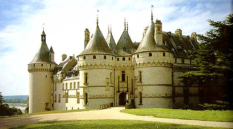

Замок Шомон-сюр-Луар, возвышающийся в окружении живописных ландшафтов долины Луары, представляет собой живой ларец истории. Его корни уходят в глубокое прошлое XV века, и он стал не только крепостью монархов, но и местом, где каждый камень несет в себе отпечаток времени. 
Замок Шомон-сюр-Луар был свидетелем многих исторических событий, переживая эпоху королей, революции и реставрации. Этот исторический монумент стал неотъемлемой частью французской культуры, отражая на своих стенах бурные переменные судеб страны.
Шомон-сюр-Луар славится не только своей историей, но и великолепием ренессансной архитектуры. Изысканные детали, башни, лестницы и сады создают впечатляющий ансамбль, переносящий посетителей в эпоху элегантности и изыска. Замок становится не просто архитектурным ансамблем, но настоящим воплощением красоты и роскоши Ренессанса в сердце Франции.